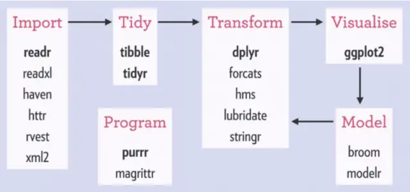

El manejo de datos (carga, limpieza, orden, visualización, modelado, ver imagen de abajo) es una de las tareas a las que mayor tiempo le dedicaremos cuando estemos trabajando con R. Uno de los paquetes más utilizados para llevar adelante esta tarea es dplyr. Este paquete forma parte del tidyverse y contiene una serie de funciones que nos dejaran seleccionar, renombrar, filtrar, re-acomodar y resumir las variables de nuestra base de datos. Conviene pensar en dplyr como una gramática para el manejo de datos.

Datos utilizaremos
Aca la realidad es que se pueden utilizar todo tipo de bases de datos. Se podrían usar las bases que vienen en el mismo R como por ejemplo iris o también la base de pinguinos del paquete palmerpenguins. Esas bases siempre las tendremos a disposición. Sin embargo hoy vamos a trabajar con algunas funciona de dplyr utilizando una base con datos bibliométricos que fue generada utilizando la herramienta Constellate de jstor. Esta base es bastante cercana a lo que podriamos conseguir en “el mundo real” porque tiene datos faltantes, esta re desordanada, tiene malos nombres de variables etc…
Para acceder a los datos podemos hacer click aca o directamente entrar al repositorio y descargarlos manualmente: https://osf.io/bwdvy/?view_only=
Una vez descargados los datos es conveniente guardarlos en la carpeta datos de nuestro proyecto.
Otra opción es ejecurtar este codigo. De esta manera la funcion dowload.file tomara la url que ingresemos, desgarcará el archivo y lo guardará donde le indiquemos. En este caso en la carpeta datos de nuestro proyecto
ATENCIÓN!!
Para que esto funcione ya debemos tener creada la carpeta datos en nuestro proyecto
Ver código
download.file(url ="https://osf.io/download/cp2kz", # URL donde esta el archivo a descargardestfile ="datos/datos_cdc.csv") # carpeta donde se guardara el archivolibrary(readr) # Para leer datosdatos_cdc <-read_csv("datos/datos_cdc.csv") # Funcion para leer datos csv (separados por coma)glimpse() # Esto es para darle un vistazo a la base
Pero… ¿Cómo?
Podemos pensar el manejo de datos con dplyr como si las funciones del paquete fueran verbos. Cuales son esos verbos?
Verbo
Función
Descripción
Filtrar
filter()
Esta función maneja los datos según sus filas. Lo que hace es filtrar datos según la lógica que le indiquemos.
Seleccionar
select()
Esta funciona maneja los datos según las columnas. Lo que hace es seleccionar (o también quitar) variables (columnas de nuestra base de datos)
Crear
mutate()
Esta función también modifica columnas y lo que hace es crear variables nuevas.
Ordenar
arrange()
Esta función maneja según las filas de alguna columna seleccionada. Lo que hace es ordenar la base de datos de menor a mayor (o viceversa) segun los datos de una variable. Básicamente es como el botón de Ordenar y Filtrar de excel.
Acomodar
relocate()
Esta función también trabaja con columnas y lo que hace es re-ordenarlas. Emula lo que comúnmente se hace con el mouse. Indicamos que variables queremos mover y hacia donde.
Renombrar
rename()
Esta función trabaja con columnas y lo que hace es renombrarlas. El orden es: nombre nuevo = nombre viejo
Resumir
summarise()
Esta función genera un resumen de nuestros datos ya sean generales o agrupados utilizando la función de abajo group_by()
Agrupar
group_by()
Esta función agrupa los datos según una variable categórica en particular.
La manera de utilizar estas herramientas es bastante simple. Se escribe la función que necesitemos, se indican los datos en los que vamos a trabajar y luego se indica aquello que necesitemos hacer.
Filtrar
Ver código
library(tidyverse)
Pseudocodigo
Ver código
funcion(datos, lo que necesitamos)
Pseudocodigo con un objetivo más claro
Ver código
filtrar(datos, variable mayor que 1)
Codigo para alcanzar el objetivo
Ver código
filter(.data = starwars, height >175) # En este caso solo necesito aquellos datos de quienes tengan una altura mayor a 175 cm
# A tibble: 48 × 14
name height mass hair_color skin_color eye_color birth_year sex gender
<chr> <int> <dbl> <chr> <chr> <chr> <dbl> <chr> <chr>
1 Darth V… 202 136 none white yellow 41.9 male mascu…
2 Owen La… 178 120 brown, gr… light blue 52 male mascu…
3 Biggs D… 183 84 black light brown 24 male mascu…
4 Obi-Wan… 182 77 auburn, w… fair blue-gray 57 male mascu…
5 Anakin … 188 84 blond fair blue 41.9 male mascu…
6 Wilhuff… 180 NA auburn, g… fair blue 64 male mascu…
7 Chewbac… 228 112 brown unknown blue 200 male mascu…
8 Han Solo 180 80 brown fair brown 29 male mascu…
9 Jek Ton… 180 110 brown fair blue NA male mascu…
10 Boba Fe… 183 78.2 black fair brown 31.5 male mascu…
# … with 38 more rows, and 5 more variables: homeworld <chr>, species <chr>,
# films <list>, vehicles <list>, starships <list>
Ver código
filter(.data = starwars, species =="Wookiee") # En este caso solo necesito los datos de quienes sean de la especie Wookiee
# A tibble: 2 × 14
name height mass hair_color skin_color eye_color birth_year sex gender
<chr> <int> <dbl> <chr> <chr> <chr> <dbl> <chr> <chr>
1 Chewbacca 228 112 brown unknown blue 200 male mascu…
2 Tarfful 234 136 brown brown blue NA male mascu…
# … with 5 more variables: homeworld <chr>, species <chr>, films <list>,
# vehicles <list>, starships <list>
Seleccionar
Pseudocodigo
Ver código
seleccionar(datos, variable(s) de interes)
Código
Ver código
select(.data = starwars, c(name, height, mass, gender)) # En este caso solo me interesaban las variables nombre, altura, masa y genero
# A tibble: 87 × 4
name height mass gender
<chr> <int> <dbl> <chr>
1 Luke Skywalker 172 77 masculine
2 C-3PO 167 75 masculine
3 R2-D2 96 32 masculine
4 Darth Vader 202 136 masculine
5 Leia Organa 150 49 feminine
6 Owen Lars 178 120 masculine
7 Beru Whitesun lars 165 75 feminine
8 R5-D4 97 32 masculine
9 Biggs Darklighter 183 84 masculine
10 Obi-Wan Kenobi 182 77 masculine
# … with 77 more rows
Ver código
seleccion1 <-select(.data = starwars, c(name, height, mass, gender))select(.data = seleccion1, -height) # En este caso se puede usar el select para quitar una variable. Eso se hace usando un - antes de la variable que queremos quitar.
# A tibble: 87 × 3
name mass gender
<chr> <dbl> <chr>
1 Luke Skywalker 77 masculine
2 C-3PO 75 masculine
3 R2-D2 32 masculine
4 Darth Vader 136 masculine
5 Leia Organa 49 feminine
6 Owen Lars 120 masculine
7 Beru Whitesun lars 75 feminine
8 R5-D4 32 masculine
9 Biggs Darklighter 84 masculine
10 Obi-Wan Kenobi 77 masculine
# … with 77 more rows
Ver código
select(.data = starwars, starts_with("h"))
# A tibble: 87 × 3
height hair_color homeworld
<int> <chr> <chr>
1 172 blond Tatooine
2 167 <NA> Tatooine
3 96 <NA> Naboo
4 202 none Tatooine
5 150 brown Alderaan
6 178 brown, grey Tatooine
7 165 brown Tatooine
8 97 <NA> Tatooine
9 183 black Tatooine
10 182 auburn, white Stewjon
# … with 77 more rows
Crear
Pseudocodigo
Ver código
crear(datos, variable(s) que necesito crear = contenido)
Código
Ver código
mutate(.data = seleccion1, altura = height/100) # En este caso vamos a crear una nueva variable que contenta la transformacion de height de centimetros a metros
# A tibble: 87 × 5
name height mass gender altura
<chr> <int> <dbl> <chr> <dbl>
1 Luke Skywalker 172 77 masculine 1.72
2 C-3PO 167 75 masculine 1.67
3 R2-D2 96 32 masculine 0.96
4 Darth Vader 202 136 masculine 2.02
5 Leia Organa 150 49 feminine 1.5
6 Owen Lars 178 120 masculine 1.78
7 Beru Whitesun lars 165 75 feminine 1.65
8 R5-D4 97 32 masculine 0.97
9 Biggs Darklighter 183 84 masculine 1.83
10 Obi-Wan Kenobi 182 77 masculine 1.82
# … with 77 more rows
A tener en cuenta!
Cuando usemos mutate() con una variable que ya existe en el dataset conviene no sobreescribirla. Esto afectaría la reproducibilidad del código. Lo mejor es generar una nueva variable con algún identificador.
Por ejemplo: Cuando cargamos el dataset vemos que la variable de agrupación gender es de tipo chr y lo que necesitamos es que sea un factor. En ese caso se haría lo siguiente:
Ver código
mutate(.data = seleccion1, gender_fct =as_factor(gender)) # Nos quedan ambas variables y solo utilizamos la que necesitemos
# A tibble: 87 × 5
name height mass gender gender_fct
<chr> <int> <dbl> <chr> <fct>
1 Luke Skywalker 172 77 masculine masculine
2 C-3PO 167 75 masculine masculine
3 R2-D2 96 32 masculine masculine
4 Darth Vader 202 136 masculine masculine
5 Leia Organa 150 49 feminine feminine
6 Owen Lars 178 120 masculine masculine
7 Beru Whitesun lars 165 75 feminine feminine
8 R5-D4 97 32 masculine masculine
9 Biggs Darklighter 183 84 masculine masculine
10 Obi-Wan Kenobi 182 77 masculine masculine
# … with 77 more rows
Ordenar
Pseudocodigo
Ver código
ordenar(datos, variable seleccionada)
Código
Ver código
arrange(.data = starwars, height) # Orden de menor a mayor
# A tibble: 87 × 14
name height mass hair_color skin_color eye_color birth_year sex gender
<chr> <int> <dbl> <chr> <chr> <chr> <dbl> <chr> <chr>
1 Yoda 66 17 white green brown 896 male mascu…
2 Ratts T… 79 15 none grey, blue unknown NA male mascu…
3 Wicket … 88 20 brown brown brown 8 male mascu…
4 Dud Bolt 94 45 none blue, grey yellow NA male mascu…
5 R2-D2 96 32 <NA> white, bl… red 33 none mascu…
6 R4-P17 96 NA none silver, r… red, blue NA none femin…
7 R5-D4 97 32 <NA> white, red red NA none mascu…
8 Sebulba 112 40 none grey, red orange NA male mascu…
9 Gasgano 122 NA none white, bl… black NA male mascu…
10 Watto 137 NA black blue, grey yellow NA male mascu…
# … with 77 more rows, and 5 more variables: homeworld <chr>, species <chr>,
# films <list>, vehicles <list>, starships <list>
Ver código
arrange(.data = starwars, desc(height)) # Orden de mayor a menor
# A tibble: 87 × 14
name height mass hair_color skin_color eye_color birth_year sex gender
<chr> <int> <dbl> <chr> <chr> <chr> <dbl> <chr> <chr>
1 Yarael … 264 NA none white yellow NA male mascu…
2 Tarfful 234 136 brown brown blue NA male mascu…
3 Lama Su 229 88 none grey black NA male mascu…
4 Chewbac… 228 112 brown unknown blue 200 male mascu…
5 Roos Ta… 224 82 none grey orange NA male mascu…
6 Grievous 216 159 none brown, wh… green, y… NA male mascu…
7 Taun We 213 NA none grey black NA fema… femin…
8 Rugor N… 206 NA none green orange NA male mascu…
9 Tion Me… 206 80 none grey black NA male mascu…
10 Darth V… 202 136 none white yellow 41.9 male mascu…
# … with 77 more rows, and 5 more variables: homeworld <chr>, species <chr>,
# films <list>, vehicles <list>, starships <list>
Acomodar
Pseudocodigo
Ver código
acomodar(datos, variable, antes/despues de)
Código
Ver código
relocate(.data = seleccion1, gender, .after = name) # En este caso acomodamos gender despues de name
# A tibble: 87 × 4
name gender height mass
<chr> <chr> <int> <dbl>
1 Luke Skywalker masculine 172 77
2 C-3PO masculine 167 75
3 R2-D2 masculine 96 32
4 Darth Vader masculine 202 136
5 Leia Organa feminine 150 49
6 Owen Lars masculine 178 120
7 Beru Whitesun lars feminine 165 75
8 R5-D4 masculine 97 32
9 Biggs Darklighter masculine 183 84
10 Obi-Wan Kenobi masculine 182 77
# … with 77 more rows
Ver código
relocate(.data = seleccion1, name, .before = mass) # En este caso acomodamos name despues de mass
# A tibble: 87 × 4
height name mass gender
<int> <chr> <dbl> <chr>
1 172 Luke Skywalker 77 masculine
2 167 C-3PO 75 masculine
3 96 R2-D2 32 masculine
4 202 Darth Vader 136 masculine
5 150 Leia Organa 49 feminine
6 178 Owen Lars 120 masculine
7 165 Beru Whitesun lars 75 feminine
8 97 R5-D4 32 masculine
9 183 Biggs Darklighter 84 masculine
10 182 Obi-Wan Kenobi 77 masculine
# … with 77 more rows
Los verbos que proporciona dplyr son geniales y muy faciles de utilizar, pero para todo lo que hicimos más arriba se necesito una linea de codigo para cada verbo. Es decir, cada codigo era independiente del otro. Una gran funcion que permite unificar todos los verbos en un solo programa es la pipa, tuberia o lo que se dice piping.
Les presento a ella %>% el operador del paquete magrittr. Lo que hace es tomar el resultado de una función y pasarla a otra función como argumento. Esto nos permite vincular una secuencia de pasos de análisis. O en otras palabras, utilizar varios verbos de dplyr en un mismo programa.
Por ejemplo: Se necesita seleccionar algunas variables, renombrarlas y crear variables que sean del tipo correcto. Por ultimo, graficar la altura según el sexo del personaje
Me encanto la pipa, pero es medio complicada de escribir. Si, es verdad. Para eso usamos el siguiente atajo del teclado CTRL + SHIFT + M y ya tenemos la pipa. Con un poco de practica ya sale sola.
Existe otra pipa que fue introducida recientemente. Yo le digo el pinguinito. Es la pipa nativa de R y es así |>. En general cumple la misma función. Yo como soy viejo y me acostumbre a usar %>% entonces sigo con esa. Ustedes usen la que mas les guste y cumpla mejor con sus objetivos. Hay debate sobre que pipa usar. Quedara para otro momento.